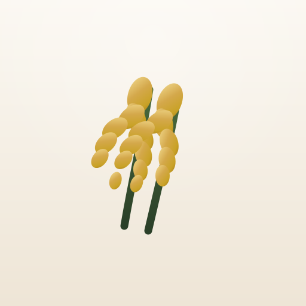
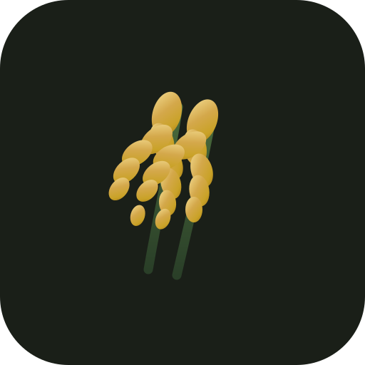
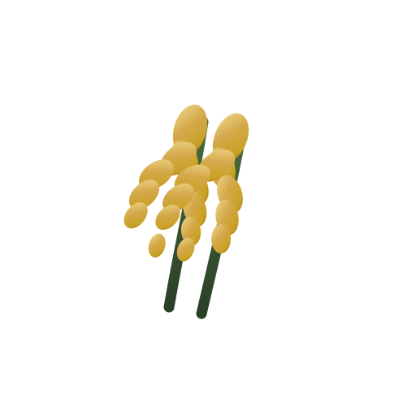
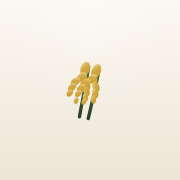
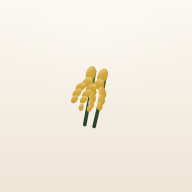
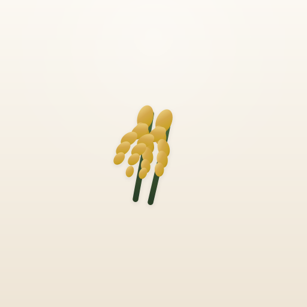
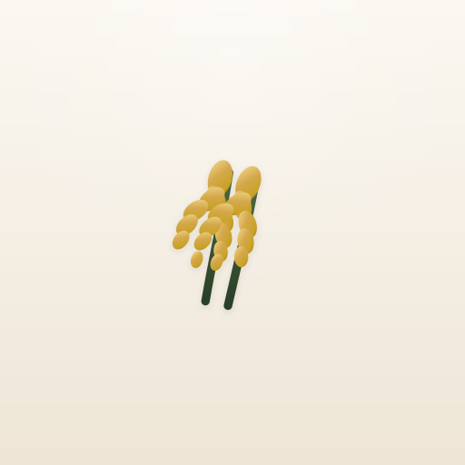

Ikona aplikacji
Dwa złote kłosy pochylone w prawo = ikona aplikacji (PWA, sklep, favicon, telefon). Nazwa „Regionaler Geschmack” to osobny napis obok — nie wchodzi do ikony. Plik: assets/icons/logo-master.svg.
Wersje na jasnym i ciemnym tle
Dobierz wariant do tła — nigdy nie zmieniaj kolorów kłosów ad hoc.

logo-on-light.svg · krem #f5efe3
logo-on-dark.svg · zieleń #2a3f28
logo-mark.svg · przezroczysty (na foto)Favicon i ikony PWA
Wszystkie generowane z master: npm run generate-icons

Apple Touch
192
512
maskable 512
Manifest: theme_color #2a3f28 · background_color #f7f3ea (tło ikon / splash PWA)
Store: assets/store/google-play/icon-512.png · assets/store/app-store/icon-1024.png
Kolory marki
Miód · pszenica · zieleń · krem. Bez zimnego niebieskiego.
Typografia
Display: Literata · UI: Source Sans 3 · Zakaz: Inter, Roboto, Poppins…
Styl ikon
Ciepłe tokeny nawigacji i kategorii (zieleń / miód / terracotta). Znak aplikacji = wyłącznie kłosy. Maskable: safe zone ~72%.
Styl fotografii
Złota godzina · wieś · naturalne światło · autentyczność produktu.
Unikaj: neon, stock biurowy, zimny niebieski dominant, placeholdery.
Zasady użycia logo
Wolno
- logo-on-light / on-dark / mark wg tła
- proporcje bez rozciągania
- clear space ≈ ¼ wysokości
- min. 24×24 px w UI
Nie wolno
- drugiego logo / emoji jako znaku store
- przekolorować kłosy na niebieski
- fioletowego glow / Inter jako brand
- obracać w inną stronę niż kanon
Zrzuty Google Play & App Store
Pięć kadrów · tło marki · Literata headline · telefon wyśrodkowany.
1 · Klimat Home
2 · Mapa regionu
3 · Producent
4 · Powrót
5 · Premium
Google Play: telefon 1080×1920 · feature 1024×500
App Store: 1290×2796 (lub 1242×2688) · ikona 1024×1024
Pliki ikon: assets/store/google-play/ · assets/store/app-store/